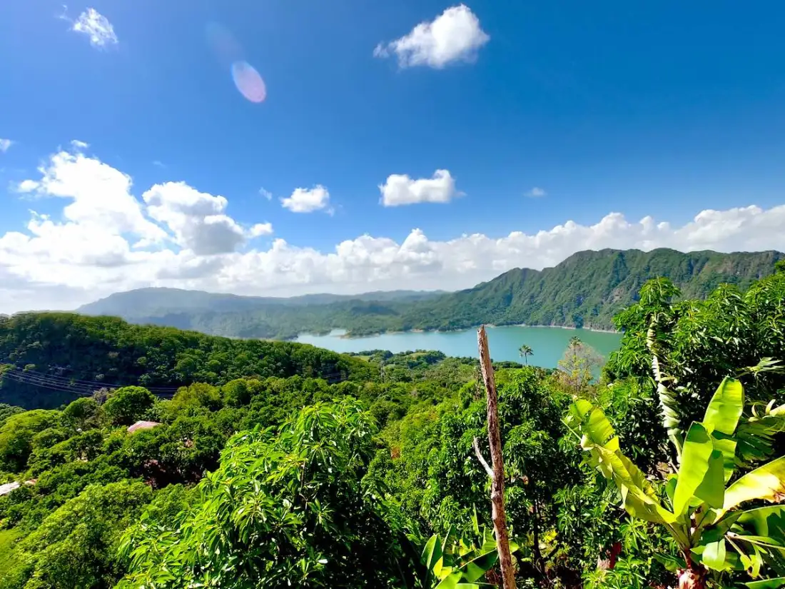

Región Valdesia: San Cristóbal, Peravia y San José de Ocoa
Cosecha Ruta
Encuentra qué se cosecha, dónde y cuándo, y sigue la ruta paso a paso.
Planteamiento del problema
La Vuelta de la Paloma y Las Mayitas: Puntos críticos por desprendimiento de rocas y caída de capa asfáltica durante lluvias intensas. El tramo Baní hasta Cruce de Ocoa (Carretera Sánchez): Afectado por deslizamientos en laderas cercanas y cruce de cañadas que arrastran lodo y escombros a la vía. Carretera Cambita Garabitos, Mucha Agua, El Cacao: Zona de producción de aguacate y café. Es una de las vías montañosas con mayor frecuencia de derrumbes de tierra y rocas que dejan incomunicados a los productores.
Público objetivo
Turistas y familias, compradores de negocios, productores, cooperativas, y personas con discapacidad que necesitan información fácil de usar.
